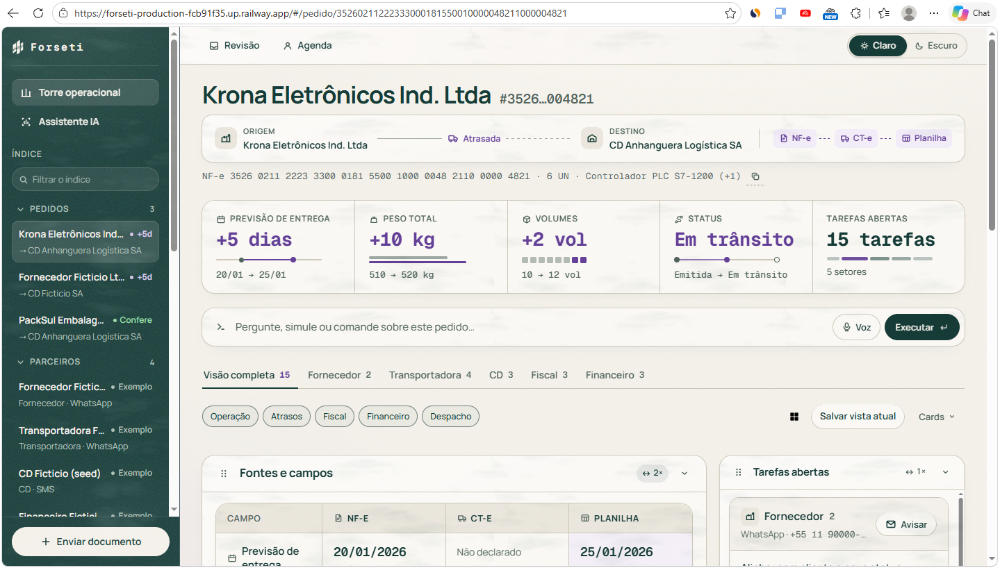
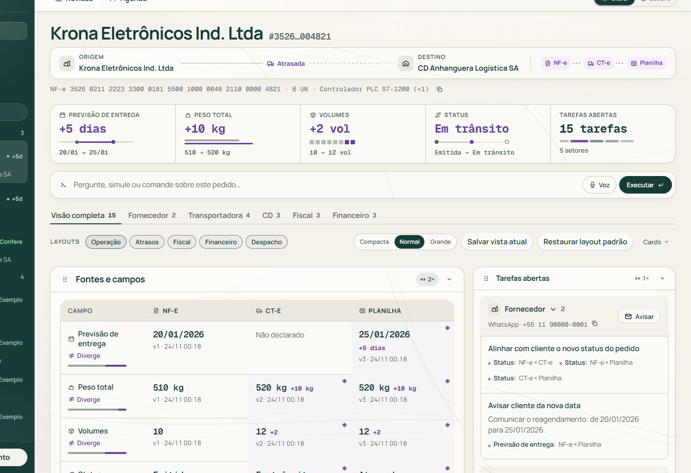

EmitenteKrona Eletrônicos
DestinoCD Anhanguera
Previsão20/01
Peso510 kg
VISIBILIDADE E COORDENAÇÃO DE ENTREGAS B2B
A Forseti conecta seus pedidos às transportadoras e busca a previsão real de entrega — por documentos fiscais, portais e agentes autônomos que contatam quem está na rota. Visibilidade centralizada e auditável, sem sua equipe perder o dia no telefone.
PESSOAS + INTELIGÊNCIA
A Forseti reúne as informações da sua operação para sua equipe agir com mais clareza.
SUA OPERAÇÃO EM UM SÓ LUGAR

01 O GARGALO REAL
Vocês conseguem confirmar onde está a carga? O cliente está esperando.
O caminhão não chegou. Ainda mantemos a equipe no recebimento?
Preciso responder ao cliente, mas o rastreio não atualiza.
Alguém já conseguiu falar com a filial ou com o motorista?
O motorista não atende. Assim que ele retornar, eu aviso.
Sem comprovação de horário, a diária entra na fatura.
Posso liberar a doca ou espero mais um pouco?
Essa peça chega antes da troca de turno?
O volume ficou aqui ou seguiu para Campinas?
HOJE
Para atender diferentes regiões, prazos e tipos de frete, sua operação depende de múltiplos parceiros. Mas a maioria é arcaica: não tem API, não tem portal atualizado e só responde por telefone. Quando o cliente cobra a entrega ou a fábrica precisa do insumo, começa a caça manual por informação.
Ver como a Forseti resolveO CUSTO DO VÁCUO DE INFORMAÇÃO
O prejuízo não são só as horas na estrada. São contatos repetidos, janelas perdidas e decisões tardias — porque a informação está em algum lugar; o contexto compartilhado, muitas vezes, não.
Veja o que muda quando o contexto é compartilhado02 COMO FUNCIONA · SURGIR
A NF-e diz uma data. O CT-e declara outro peso. A planilha do CD carrega uma terceira previsão. Nenhum sistema está errado: cada um registrou apenas o que viu.
02 COMO FUNCIONA · CONECTAR
Ela atravessa os que você já tem. Linhas de coordenação leem NF-e, CT-e, planilhas e mensagens, e acendem em lavanda cada ponto onde as fontes divergem.
02 COMO FUNCIONA · PROPAGAR
O agente confirma a verdade operacional pelos canais que a transportadora já usa: WhatsApp, voz e e-mail. O contexto confirmado chega no mesmo instante a todos os setores.
02 COMO FUNCIONA · ESTABILIZAR
Cada campo com fonte, horário e autor. Ao lado, a torre real da Forseti operando o pedido da Krona na base pública de demonstração.

03 O CASO
Um pedido da base pública de demonstração, seguido do embarque à doca. Cada estação mostra o que a operação sabia naquele momento, e o que ela não sabia.
A ESTRADA CONTINUA →
A Krona emite a NF-e 3526: dez volumes, 510 kg, entrega prevista para o mesmo dia no CD Anhanguera. Para o ERP, o pedido está resolvido.
A transportadora emite o CT-e 5211 declarando 520 kg e doze volumes. Duas fontes oficiais, dois pesos. Nenhum sistema avisa ninguém.
Dois dias sem sinal de chegada. O agente confirma por WhatsApp e voz: a carga foi reconsolidada em Jundiaí. A previsão real passa a ser 25/01, cinco dias além do prometido.
Quatro minutos depois da confirmação, a torre já abriu quinze tarefas entre fiscal, financeiro, transporte e CD. A doca é reagendada antes de virar multa.
Sem troca de sistema, sem instalação na transportadora. A diferença foi uma só: todos passaram a trabalhar na mesma versão do pedido, com fonte e horário em cada campo.
04 PERFIL DE ADERÊNCIA
Aderência honesta: onde a camada de coordenação faz diferença, e onde não é o foco.
Para indústrias que contratam frotas terceirizadas de perfis muito diferentes, de grandes transportadoras com telemetria a empresas regionais que operam por telefone e WhatsApp.
Para quem distribui com agendamento de descarga, onde a hora certa vale mais do que o dia certo: varejo, automotivo, químico, farmacêutico e centros de distribuição.
Para operações que disputam diárias e prazos com transportadoras e precisam mostrar, com evidência, quando a informação existiu e quem a confirmou.
Transparência técnica sobre integração, rotina e convivência de sistemas.
Não. A Forseti opera como camada de coordenação e busca ativa ao lado dos seus sistemas existentes, consumindo NF-e e CT-e sem exigir substituição nem migrações traumáticas.
Através de agentes autônomos treinados para interagir pelos mesmos canais que a transportadora já usa no dia a dia: WhatsApp, telefone e e-mail operacional, transcrevendo e validando cada informação.
Zero instalação e zero barreira. O parceiro responde aos contatos nos canais habituais da sua rotina.
Comprova a cronologia imutável da entrega: fonte original, canal de contato, horário exato, gravação de áudio e evidências seladas para proteger sua empresa em disputas de diárias.
DIAGNÓSTICO OPERACIONAL
Conte brevemente como suas entregas operam hoje. Desenhamos um mapa de vácuos de informação da sua cadeia sem nenhum compromisso.
Sem dados confidenciais: apenas a divergência ou tipo de atraso que mais sobrecarrega sua equipe.
Identificamos onde o status congela e quais decisões poderiam ser antecipadas.
Se fizer sentido mútuo, definimos um escopo reduzido para demonstrar economia na prática.